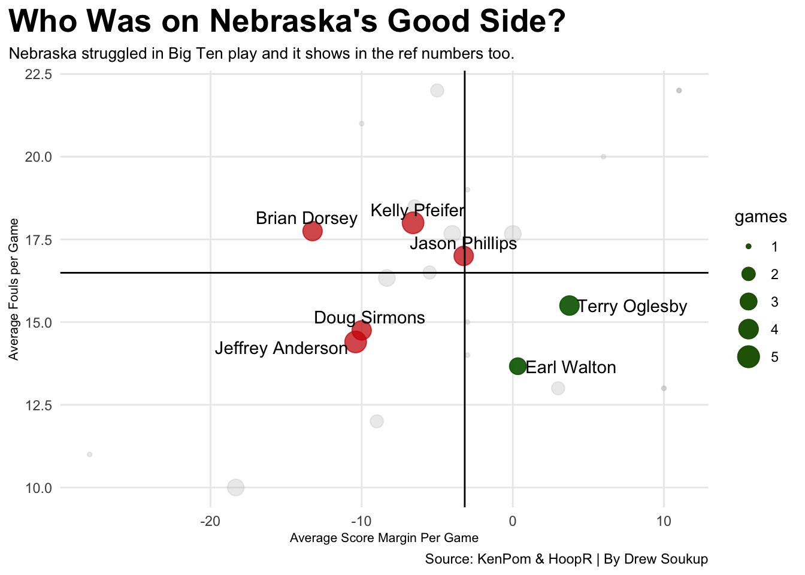

Code
library(tidyverse)
library(hoopR)
library(ggrepel)
library(ggalt)
library(ggtext)library(tidyverse)
library(hoopR)
library(ggrepel)
library(ggalt)
library(ggtext)Nebraska men’s basketball last year had a year of ups and downs. Road winning streaks followed by home losing streaks forced the Huskers to accept an invitation to the College Basketball Crown, where they ended the season on a 4-game winning streak. However, after most losses, many fans turned to the refs to blame on Twitter, whether it was a missed double dribble in Iowa City, the passer moving on a sideline out of bounds in Columbus, or getting absolutely dog walked in Mackey Arena, it all fell on the refs at the end of the day. But which ref helped Nebraska most last season, and who were the ones who ruined the chances of a March Madness run? It’s good to note that the data is pulled from quad one and two tier games last season. As the numbers would be quite skewed in Nebraska’s favor if lower-quality opponents were included.
nu_25 <- load_mbb_team_box(2025) |>
filter(team_short_display_name == "Nebraska")
refs <- read_csv("~/Documents/SPMC-350/PROJECT 2/Nebraska Refs 24_25.csv")
nu_ref <- nu_25 |>
left_join(refs, by = "game_date")
ref_avgs <- nu_ref |>
group_by(Ref) |>
summarise(
games = n(),
avg_margin = mean(team_score - opponent_team_score),
avg_fouls = mean(fouls),
avg_fta = mean(free_throws_attempted),
avg_opp_fta = mean(Opp_FTA),
avg_tot_ft = mean(free_throws_attempted + Opp_FTA),
win_pct = mean(team_winner) * 100,
avg_pts = mean(team_score),
techs = sum(technical_fouls),
flagarants = sum(flagrant_fouls)
) |>
filter(avg_margin < 18)
common_refs <- ref_avgs |>
filter(games > 3) |>
filter(Ref != "Terry Oglesby")
good_refs <- ref_avgs |>
filter(avg_margin > 0,
games > 2)
foul_refs <- ref_avgs |>
filter(avg_fouls > 20)
ggplot() +
geom_point(
data=ref_avgs,
aes(x=avg_margin, y=avg_fouls, size=games),
color="grey",
alpha=.3) +
geom_point(
data=common_refs,
aes(x=avg_margin, y=avg_fouls, size=games),
color="#d00000",
alpha=.7) +
geom_point(
data=good_refs,
aes(x=avg_margin, y=avg_fouls, size=games),
color="darkgreen",
alpha=.9) +
geom_vline(xintercept = -3.181548) +
geom_hline(yintercept = 16.49048
) +
geom_text_repel(
data=common_refs,
aes(x=avg_margin, y=avg_fouls, label=Ref), nudge_y = .2
) +
geom_text_repel(
data=good_refs,
aes(x=avg_margin, y=avg_fouls, label=Ref), nudge_x = .2
) +
labs(
x="Average Score Margin Per Game",
y="Average Fouls per Game",
title="Who Was on Nebraska's Good Side?",
subtitle="Nebraska struggled in Big Ten play and it shows in the ref numbers too.",
caption="Source: KenPom & HoopR | By Drew Soukup"
) +
theme_minimal() +
theme(
plot.title = element_text(size = 20, face = "bold"),
axis.title = element_text(size = 8),
plot.subtitle = element_text(size=10),
panel.grid.minor = element_blank(),
plot.title.position = "plot"
) 
Nebraska fans should be rooting for Oglesby to be a referee more often. Nebraska was 3-1 with him calling the game last year, and Nebraska was 3-2 with Earl Walton officiating. Who stands out negatively is Jeff “High Knees Ref” Anderson (1-4), Brian Dorsey (1-3), and Kelly Pfeifer (2-3). These three stick out as at least one of them was a referee for all of Nebraska’s 6 one-score Big Ten losses.
two_refs <- ref_avgs |>
filter(games > 2)
knees <- ref_avgs |>
filter(Ref == "Jeffrey Anderson")
kelly <- ref_avgs |>
filter(Ref == "Kelly Pfeifer")
ggplot() +
geom_bar(data=two_refs, aes(x=reorder(Ref, avg_fta), weight=avg_fta)) +
geom_bar(data=kelly, aes(x=reorder(Ref, avg_fta), weight=avg_fta), fill="#d00000") +
geom_bar(data=knees, aes(x=reorder(Ref, avg_fta), weight=avg_fta), fill="#d00000") +
coord_flip() +
labs(
x="",
y="Nebraska Average Free Throw Attempts per Game",
title="Which Ref Sent Nebraska to the Line Most",
subtitle="Though Anderson and Pfeifer called the most games, they didn't help Nebraska at the line much.",
caption="Source: KenPom & HoopR | By Drew Soukup"
) +
theme_minimal() +
theme(
plot.title = element_text(size = 15, face = "bold"),
axis.title = element_text(size = 8),
plot.subtitle = element_text(size=9),
panel.grid.minor = element_blank(),
plot.title.position = "plot"
) 
These stats can also get skewed because Kelly and Jeffrey were both apart of Nebraska’s biggest stompings last year at Michigan State and Purdue, but nonetheless they were apart of 5 combined Nebraska wins and 10 losses. Where Nebraska did shine was getting to the free-throw line to manufacture points, mostly thanks to Brice Williams. Nebraska didn’t have the best half-court offense last year so they relied on getting to the free-throw line to get points, and it shows compared to their opponent’s free throws. Of the 11 refs that called Q1 and 2 games for Nebraska, 9 of the 11 gave Nebraska more free throw attempts on average. The two that gave the opponent more were Jason Phillips (2-2) and Brian Dorsey. Both margins are among the lowest differences, though among the refs Nebraska had.
ggplot() +
geom_dumbbell(
data=two_refs,
aes(y=Ref, x=avg_fta, xend=avg_opp_fta),
size = 2,
colour = "darkgrey",
colour_x = "#d00000",
colour_xend = "darkblue") +
labs(
x="Nebraska vs Opponent Free Throw Attempts",
y="",
title="Nebraska Drew More Calls than their Opponents on Average",
subtitle="The difference in average free throws a game is wider for more refs than you'd think.",
caption="Source: KenPom & HoopR | By Drew Soukup"
) +
theme_minimal() +
theme(
plot.title = element_text(size = 13, face = "bold"),
axis.title = element_text(size = 8),
plot.subtitle = element_text(size=10),
panel.grid.minor = element_blank(),
plot.title.position = "plot"
)